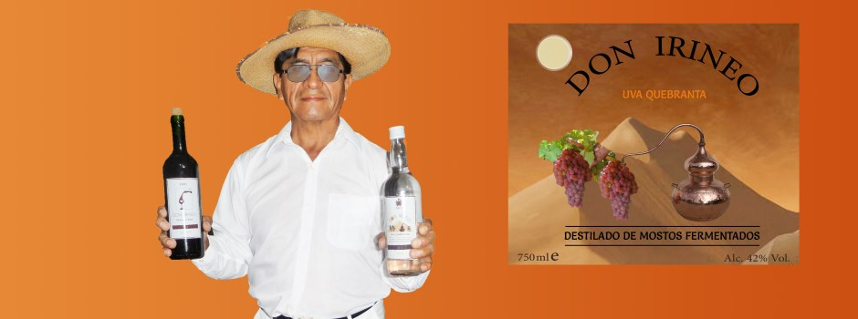
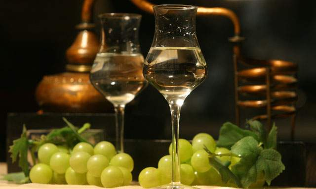
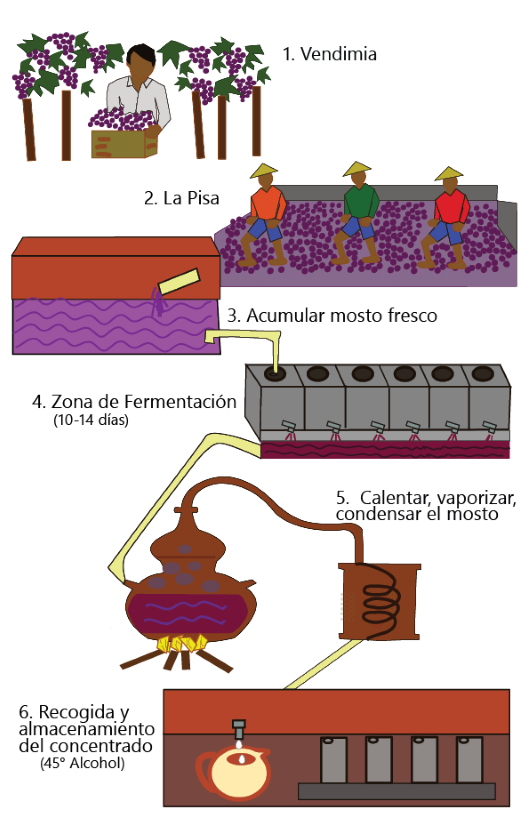

-

-

-

- 
Productos
Ofrecemos piscos y vinos de calidad:

Aguardiente tradicional
uva: Quebranta

Aguardiente tradicional
uva: Quebranta, Torontel
{kind=link}
Otros Destinos

Turismo rural en Subtanjalla, Ica, ofrece habitaciones y departamento, administrado por Don Irineo.
Sobre Nosotros
"Don Irineo" les da la más cordial bienvenida a Ica, la tierra santa, dulce, generosa y calurosa del sol eterno!
Aquí la producción de piscos y vinos es una tradición familiar. Las plantaciones de vid son cultivadas en nuestros propios viñedos, la "chacra".
En Ica las condiciones son ideales para el desarrollo de uvas dulces y jugosas.
Ica, posee una larga tradición de piscos y vinos, que alberga algunas de las mejores bodegas del país.
Las uvas son seleccionadas y divididas en dos grupos, las aromáticas: Albilla, Italia, Moscatel, Torontel y las no aromáticas: Quebranta, Mollar y Uvina.
El mosto de uva se convierte en vino y el destilado en el aguardiente: pisco peruano.

¿CÓMO SE ELABORA EL PISCO?
El Pisco, o llamado tambien "destilado de mostos fermentados", se elabora de la siguiente manera:
Después de la cosecha, las uvas son recolectadas y seleccionadas, llevadas a un lagar. Luego están listas para la pisa, donde son trituradas, ese mosto (jugo de uva) es fermentado para luego pasar al proceso de destilación.
La cocción produce el vapor del mosto que viaja por el cuello de cisne y serpentin del alambique, provocando la condensación.
El resultado es Pisco puro (las primeras gotas alcanzan 45° Gay-Lussac).
proceso de destilación:
